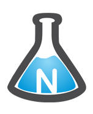

Me chamo Cauan, tenho 23 anos e sou mineiro, natural de Lagoa Santa. ou graduado em bacharel em Ciência e Tecnologias na Universidade Federal do Rio Grande do Norte (UFRN).
Atualmente curso Engenharia de Computação na UFRN e tenho uma bolsa de pesquisa do Instituto Metrópole Digital (IMD) juntamente com o Núcleo de Pesquisa em Alimentos e Medicamentos (NUPLAM).
- UFRN - Graduando em Engenharia da Computação - desde outubro de 2021.
- UFRN - Bacharelado em Ciências e Tecnologia com ênfase em Tecnologia da Computação - de julho de 2017 concluindo em setembro de 2021.
- Serviço Nacional de Aprendizagem Industrial (SENAI) - Técnico em Automação Industrial - de julho de 2015 a dezembro de 2016.
CONHECIMENTOS
- Linux
- MongoDB, MariaDB, MySQL, Mosquito
- MQTT e ModBus
- Desenvolvimento Web embarcado em Raspberry utilizando NodeRed
- Docker, Docker-compose
- Python, JavaScrypt, C++, C, HTML, CSS, Vue React e Matlab
-
IMD/UFRN - Bolsista de pesquisa IOT - Desde julho
Participo do projeto ODDigital que consiste em informatizar o processo de manipulação de medicamentos que ocorre no NUPLAM. Faço contribuições em IOT, desenvolvendo um dispositivo com Raspberry, leitor RFID e LCD, com a finalidade de registrar as limpezas dos locais de processamento de medicamentos no qual seguem um protocolo rigoroso que é implementado na aplicação. Os conhecimentos aplicados para o desenvolvimento foram:
- JavaScrypt, CSS, Vue React;
- MQTT, MongoDB, MySQL, Mosquito;
- Docker, Docker-compose;
- NodeRed, Inventor (na confecção do case);
- UML.
- Departamento de matemática (DMAT/UFRN) - monitor de Cálculo I - de junho a outubro de 2021.
- Escola de Ciências e Tecnologia (ECT/UFRN) - monitor de Cálculo II - de março de 2020 a abril de 2021.
- (ECT/UFRN) - monitor de Cálculo I - de abril de 2019 a dezembro de 2019.
- Centro de Educação (CE/UFRN) - bolsista de apoio técnico - de setembro de 2017 a abril de 2019.
- SENAI - Técnico Instrumentista - de julho de 2016 a dezembro de 2016.
ARTIGOS
- SILVA, A. C. ; LIMA, C. M. ; MOREIRA, D. A. . Desenvolvimento e Aplicação de Testes Online Utilizando a Ferramenta Google Forms. In: Encontro integrado dos programas de ensino da UFRN, 2020, Natal-RN. Anais do evento - Encontro integrado dos programas de ensino da UFRN, 2020.
- LIMA, C. M.; CARVALHO, E. J. F. ; COSTA, V. H. R. S. . Ciclo rápido de exercícios e aprendizagem ativa em disciplinas de matemática.. In: Encontro integrado dos programas de ensino da UFRN, 2019, Natal-RN. Anais do evento - Encontro integrado dos programas de ensino da UFRN, 2019.
TCC DO TÉCNICO EM AUTOMAÇÃO INDUSTRIAL
- PLANTA DIDÁTICA DE VAZÃO - 2016 DOCUMENTAÇÃO
Contribui como instrumentista para a confecção da planta didática